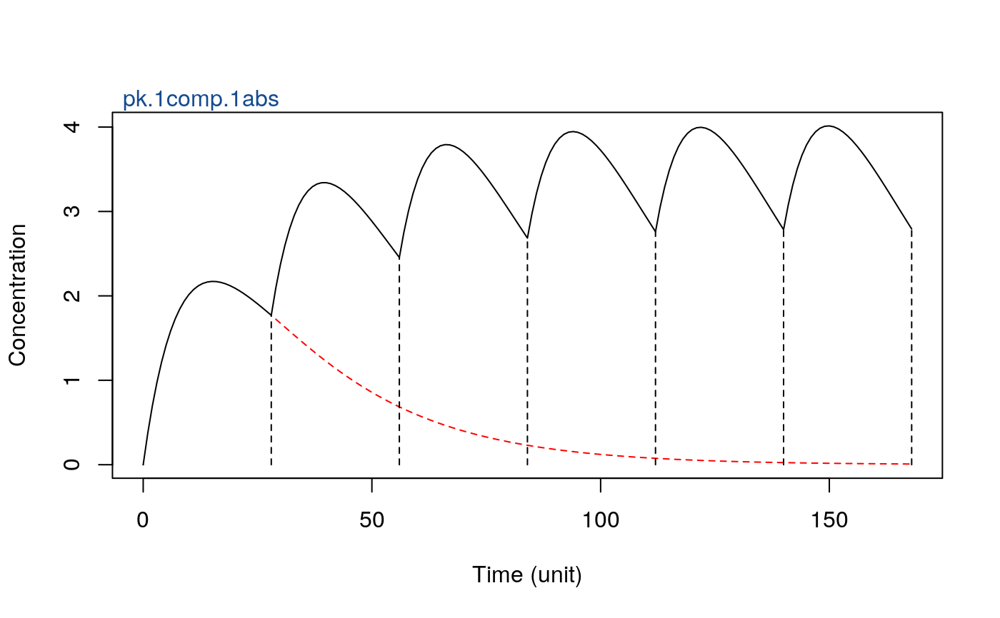
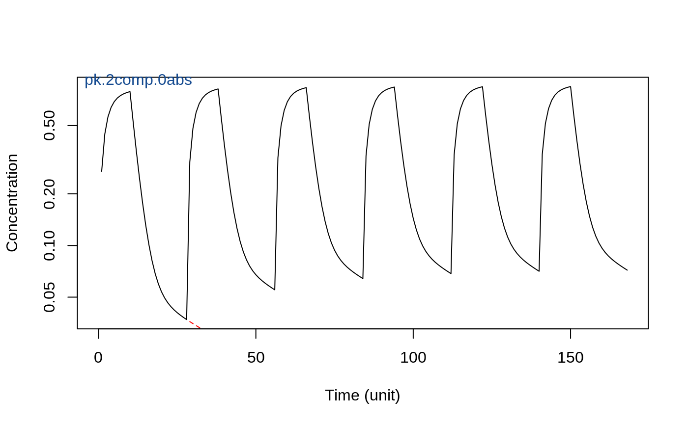
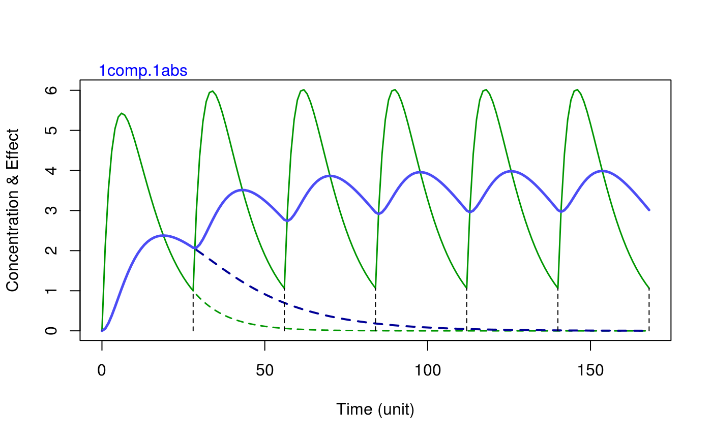

pk.pred.RdCollection of linear PK function for 1, 2, and 3 compartment distribution structures and various input functions. Further a collection of effect relationships feeding on concentration from the PK functions. Can be used in isolation but ideally embedded within superposition function pk.pred and plotting function pkpdPredPlot
pk.pred(doses, t.doses, t.obs, pk.func, parms) pk.1comp.iv(dose, tob, parms) pk.1comp.0abs(dose, tob, parms) pk.1comp.1abs(dose, tob, parms) pk.1comp.1abs.ss(dose, tob, parms) pk.1comp.10abs(dose, tob, parms) pk.1comp.lag(dose, tob, parms) pk.2comp.iv(dose, tob, parms) pk.2comp.0abs(dose, tob, parms) pk.2comp.1abs(dose, tob, parms) pk.2comp.1abs.m(dose, tob, parms) pk.2comp.1abs.ss(dose, tob, parms) pk.3comp.iv(dose, tob, parms) pk.3comp.iv.ss(dose, tob, parms) pk.3comp.1abs(dose, tob, parms) pk.3comp.1abs.ss(dose, tob, parms) eff.1comp.iv(dose, tob, parms) eff.1comp.1abs(dose, tob, parms) eff.1comp.1abs.ss(dose, tob, parms) eff.2comp.iv(dose, tob, parms) eff.2comp.1abs(dose, tob, parms) eff.2comp.1abs.ss(dose, tob, parms) eff.3comp.1abs(dose, tob, parms)
| doses | vector of dose amounts (with pk.pred multiple dose wrapper) |
|---|---|
| t.doses | vector of dose times. Needs to have same length as doses |
| t.obs | vector of observation times relative to time of first dose (with pk.pred multiple dose wrapper) |
| pk.func | function object predicting concentration as a function of time, given dose and pk parameters |
| parms | vector of pk parameter values. This can but is not required to be a named vector. |
| dose | vector of dose amounts (individual pk.xxx functions) |
| tob | vector of time observations (individual pk.xxx functions) |
| e.func | function object predicting effects |
PK predictions, PK plots
pk.1comp.iv:
pk.1comp.0abs:
pk.1comp.1abs:
pk.1comp.1abs.ss:
pk.1comp.10abs:
pk.1comp.lag:
pk.2comp.iv:
pk.2comp.0abs:
pk.2comp.1abs:
pk.2comp.1abs.m:
pk.2comp.1abs.ss:
pk.3comp.iv:
pk.3comp.iv.ss:
pk.3comp.1abs:
pk.3comp.1abs.ss:
eff.1comp.iv:
eff.1comp.1abs:
eff.1comp.1abs.ss:
eff.2comp.iv:
eff.2comp.1abs:
eff.2comp.1abs.ss:
eff.3comp.1abs:
# 1comp elimination, 1st-order absorption pkPredPlot(doses = rep(100, 7), t.doses = seq(0,24*7,length=7), t.obs = seq(0,24*7) , pk.func = pk.1comp.1abs, parms = c(1,25, 0.1, 5,0.5) )# 2comp elimination, 0-order absoorption pkPredPlot(doses = rep(100, 7), t.doses = seq(0,24*7,length=7), t.obs = seq(0,24*7) , pk.func = pk.2comp.0abs, parms = c(10,30, 3, 90,10), log = TRUE )## demo effect prediction after single and multiple doses eff.1comp.1abs(dose = 100, tob = seq(0,24*7), parms = c(1,10, 0.25, 0.05))#> [1] 0.000000000 0.054747435 0.192166256 0.380073330 0.594964651 0.819935447 1.043076158 1.256237489 1.454081520 1.633354335 1.792330054 1.930387323 #> [13] 2.047688038 2.144934858 2.223189329 2.283736515 2.327985247 2.357395556 2.373426762 2.377501203 2.370979740 2.355146053 2.331197455 2.300240475 #> [25] 2.263289895 2.221270209 2.175018773 2.125290044 2.072760514 2.018033994 1.961647047 1.904074394 1.845734170 1.786992978 1.728170670 1.669544825 #> [37] 1.611354936 1.553806270 1.497073425 1.441303599 1.386619559 1.333122361 1.280893808 1.229998678 1.180486738 1.132394562 1.085747160 1.040559448 #> [49] 0.996837566 0.954580051 0.913778894 0.874420475 0.836486405 0.799954266 0.764798273 0.730989857 0.698498186 0.667290618 0.637333106 0.608590547 #> [61] 0.581027093 0.554606419 0.529291959 0.505047108 0.481835397 0.459620643 0.438367076 0.418039449 0.398603128 0.380024165 0.362269365 0.345306328 #> [73] 0.329103497 0.313630180 0.298856573 0.284753780 0.271293814 0.258449604 0.246194991 0.234504724 0.223354451 0.212720704 0.202580888 0.192913263 #> [85] 0.183696925 0.174911787 0.166538560 0.158558729 0.150954532 0.143708939 0.136805627 0.130228959 0.123963957 0.117996287 0.112312230 0.106898660 #> [97] 0.101743026 0.096833328 0.092158095 0.087706367 0.083467672 0.079432009 0.075589827 0.071932008 0.068449847 0.065135039 0.061979657 0.058976139 #> [109] 0.056117270 0.053396171 0.050806281 0.048341343 0.045995393 0.043762744 0.041637977 0.039615925 0.037691666 0.035860509 0.034117984 0.032459833 #> [121] 0.030881999 0.029380617 0.027952006 0.026592660 0.025299240 0.024068566 0.022897609 0.021783487 0.020723453 0.019714893 0.018755318 0.017842358 #> [133] 0.016973757 0.016147368 0.015361146 0.014613146 0.013901514 0.013224489 0.012580391 0.011967623 0.011384666 0.010830072 0.010302465 0.009800534 #> [145] 0.009323033 0.008868774 0.008436629 0.008025522 0.007634432 0.007262386 0.006908456 0.006571763 0.006251469 0.005946775 0.005656922 0.005381189 #> [157] 0.005118889 0.004869368 0.004632003 0.004406204 0.004191407 0.003987077 0.003792704 0.003607803 0.003431912 0.003264594 0.003105431 0.002954025 #> [169] 0.002809999pk.pred(doses = rep(100, 7), t.doses = seq(0,24*7,length=7), t.obs = seq(0,24*7) , pk.func = eff.1comp.iv, parms = c(1,10, 0.25) )#> [1] 0.000000 2.100611 3.536668 4.474194 5.040677 5.333764 5.428025 5.380189 5.233228 5.019507 4.763241 4.482387 4.190119 3.895960 3.606660 3.326874 #> [17] 3.059681 2.806988 2.569832 2.348615 2.143289 1.953482 1.778606 1.617934 1.470653 1.335909 1.212836 1.100577 0.998303 3.005828 4.357235 5.217835 #> [33] 5.714456 5.944130 5.980855 5.880838 5.686567 5.429964 5.134839 4.818781 4.494623 4.171582 3.856127 3.552659 3.264025 2.991921 2.737193 2.500072 #> [49] 2.280349 2.077512 1.890843 1.719498 1.562558 1.419073 1.288089 1.168672 1.059920 3.061583 4.407685 5.263486 5.755763 5.981507 6.014675 5.911441 #> [65] 5.714257 5.455020 5.157511 4.839295 4.513185 4.188378 3.871325 3.566410 3.276468 3.003180 2.747381 2.509290 2.288690 2.085059 1.897672 1.725677 #> [81] 1.568149 1.424132 1.292667 1.172814 1.063668 3.064974 4.410754 5.266263 5.758275 5.983780 6.016732 5.913302 5.715941 5.456544 5.158890 4.840542 #> [97] 4.514314 4.189399 3.872249 3.567246 3.277225 3.003865 2.748000 2.509850 2.289197 2.085518 1.898088 1.726053 1.568489 1.424440 1.292945 1.173066 #> [113] 1.063896 3.065181 4.410940 5.266432 5.758428 5.983918 6.016857 5.913415 5.716044 5.456636 5.158974 4.840618 4.514383 4.189461 3.872305 3.567297 #> [129] 3.277271 3.003906 2.748038 2.509884 2.289228 2.085546 1.898113 1.726076 1.568510 1.424458 1.292962 1.173081 1.063910 3.065193 4.410952 5.266442 #> [145] 5.758437 5.983926 6.016865 5.913422 5.716050 5.456642 5.158979 4.840623 4.514387 4.189465 3.872308 3.567300 3.277274 3.003909 2.748040 2.509887 #> [161] 2.289230 2.085547 1.898114 1.726077 1.568511 1.424459 1.292963 1.173082 1.063911pkpdPredPlot(doses = rep(100, 7), t.doses = seq(0,24*7,length=7), t.obs = seq(0,24*7) , pk.func = pk.1comp.1abs, e.func = eff.1comp.1abs , parms = c(1,10, 0.25, 0.05) )